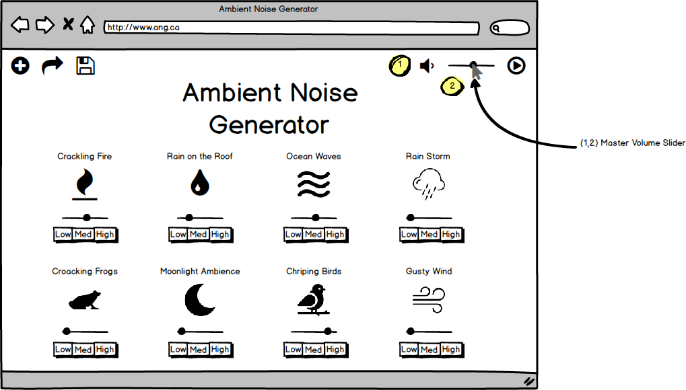

This page will discuss the design and interface of the Ambient Noise Generator website. Discussed are low-fidelity mockups that will represent the design of the website that corresponds to user requirements as well as descriptions detailing the functionality of the interface. For more information on the Ambient Noise Generators requirements, see: https://corbingraham.github.io/SENG_310_phase_1/
The design of our ambient noise generator website is inspired by the pre-existing site defonic which is a site that also allows users to create their own ambient soundscapes. The website itself will have a similar minimalistic design to the original but with several tweaks and functional upgrades which will be described in detail below. The layout of the site will be kept simple and easy to use with the most important functions accessible from the top right corner of the site at all times. The name of our site will appear at the center of the webpage along with our brand tagline and our logotype will be on the top left corner of the site. The color scheme of the site will include the calm cool toned sky blue and its complimentary color yellow. The fonts used are minimalist and easy to read in sans serif style. A more rounded, quirky font ‘Quinta’ will be used for the title of the site as well as the names of the sound samples while a bolded arial will be used for options headings like ‘sign up/log in’, ‘import’, ‘export’. Any menus or pop-ups that appear will be shown in a white opaque box.
There should be a library of existing/premade common sound samples on the website. Initial requirements will be for 20 different sounds, drawing primarily from natural sounds (e.g. birdsong, fire, waves, etc.).
Data will be collected from similar pre-existing sites like defonic of what sounds are the most clicked on and played the longest. A list of looping sounds would then be compiled based on user needs. They should be available on the front page of the site with the more popular ones at the top of the page. Sounds should be displayed as boxes with a picture and title with the picture being a symbolic representation of the sound. The sounds will be listed in descending rows of four. Each sound should have an independently operating volume control slider for that sound which appears when the sound is played below the image. All of the sliders will start at zero, and the user adjusts accordingly.
The user should be able to independently control the volume of any of the ambient sounds as well as being able to control the master volume.
The volume of each of the ambient sounds can be controlled by each sound’s individual volume slider as described in requirement 1. The master volume should be a drop down slider located at the top right hand corner of the screen from a volume icon, to the right of the master play/pause button. The user can click the master volume icon to mute or when sounds are playing a slider will appear beside the volume icon for users to adjust the master volume level. The volume will stay in the top right and follow the page if the user scrolls up and down the page.
This is an example of the icon’s appearance when not muted versus being muted.
The user should be able to export an audio file, likely an mp3, based on the sounds they have chosen as well as the adjustments in volume that have been made to them.
The user should be able to choose the length/format of the audio file that they are exporting.
In addition to downloading the file, the user should be able to save the parameters as a preset that they can name and reuse when the user comes back.
The export button will be displayed in the top left hand corner, to the right of the import button. Pressing the button will bring up a small menu, allowing the user to adjust the length and format of the sample. Upon pressing the export button, the sample with the configured settings will be downloaded to the default download location. The recording will have the settings specified in the main screen as well as the export menu.
In addition to the export option there will also be a save button to the right of the export button which will save the preset for later use. The preset will be saved using cookies. A pop-up will appear beside the save icon notifying the user that the preset was saved. Both the save and export option should follow the page as the user scrolls.
Ability for a user to tweak the type of sounds that are being played. For each sound, there can be one or more variations on that sound to add variety to the product.
Aside from the ability to individually adjust the volume of each sound sample users will also be able to select variations on the sound type using multiple buttons that appears when the sound is played. For example the sound fire will be available as a more warm fireplace sound to a more violent bonfire sound.
There should be an option that allows the users to upload any sound sample that they want. The uploaded sample will have the same volume control option as all the default sound samples but will not have an intensity option. The file format will be restricted to whatever sound file is used for the samples, and the custom sounds will remain local to the computer that they are uploaded from.
Also in the top left hand corner is the import option. Again, this option should follow the user as they scroll along the page.This allows users to upload their own sound sample to play alongside existing sounds available. If the file is in an acceptable format it will be uploaded to the users’ existing sound library. If not, a message will appear underneath the text box stating that the file format is not supported. The user can also upload their own icon and set the title of the sample.The new sample will be created at the bottom of the list of sounds which has the same volume and intensity functions as the other sound samples.
Users should have the ability to remove samples that they have uploaded.
Sound samples uploaded by the user should have an additional icon to the right of the play/pause button and the volume slider. Clicking on the icon will prompt the user with a confirmation dialogue box asking the user if they would like to delete the sound sample. Accepting the confirmation box will remove the sample from the user’s library.
There should be a play/pause button so that users can stop or resume playback of sound samples.
The play button is positioned in the top right hand corner. It will follow the screen and keep its position at the top right hand corner of the window if a user scrolls up or down in the webpage so that users can pause or play at any time. The icon should responsively change between play and pause so that users have a visual identification that the music can be resumed or paused.
Powered by w3.css